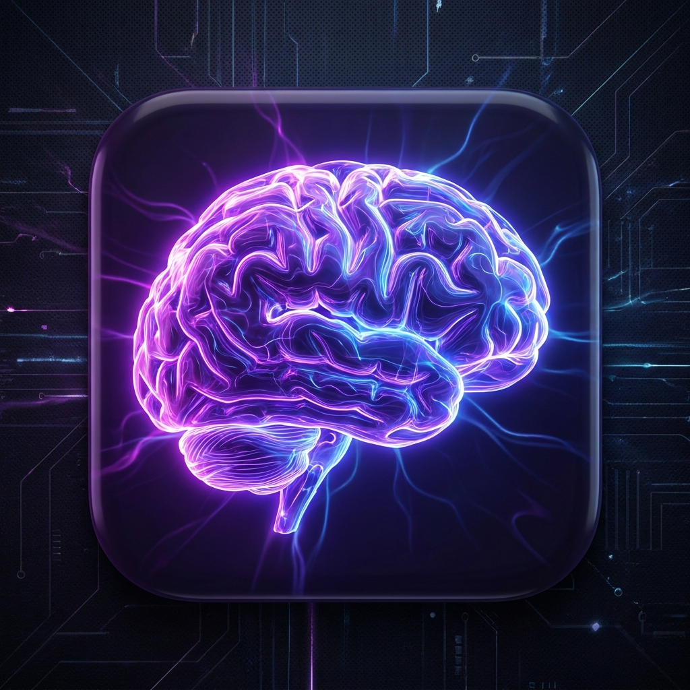

🧠'">
Big Brain Energy — Soma Edition
Tap
✦ Practice & Remember
Tap
Enjoying the app? Treat me 🙏
☕
$5
🍫
$10
🍣
$20
Custom amount 💛
🔒 Apple Pay & all cards
Clinical Tools
🔬
Clinical Reasoning
Symptom → Which test to use
›
← Back to Home
🔬
Clinical Reasoning
Select body region to find the right test
Body Region
← All Regions
🇷🇺 RU
Client Complaints → Tests
All Tests in This Region — tap to open
← Back
🇷🇺 RU
Why Test? (Symptoms)
👤 Client Position
🙌 Therapist Action
✅ Positive Test (+)
💆 Massage Response (If Positive)
▶ Watch Treatment on YouTube
▶ Watch Test on YouTube
← Back to Region
← Home
🇷🇺 RU
← Back to Home
← Tests
1 / 10
Question 1
🇷🇺 RU
Next Question →
🎉
Great job!
0%
0
Correct
0
Mistakes
0
Total Questions
0%
Score
📋 Review Mistakes
🔁 Try Again
🏠 Back to Tests
📋 Review Mistakes
← Back to Results
🏠 Back to Tests